NÁRODNÍ DEN BIZONŮ · USA
Bizon americký · Bison bison
Poznejte mohutného pastevce severoamerických travnatých plání. Sledujte Báru a její stádo v průběhu roku, zjistěte, jak rostou bizoní telata, a proč ochrana bizonů souvisí také s ochranou prérie.
📅 7. listopadu 2026První sobota v listopadu🐾 Druh: Bison bison
Otevřít událost v kalendáři →Život na prérii
Vydejte se s Bárou dvanácti ilustrovanými okamžiky života bizonů – od prvních dnů na prérii až k nové generaci. Příběhové obrázky jsou v současné pracovní podobě; schválenou tiskovou aktivitou jsou nyní základní omalovánky LV1–LV5.
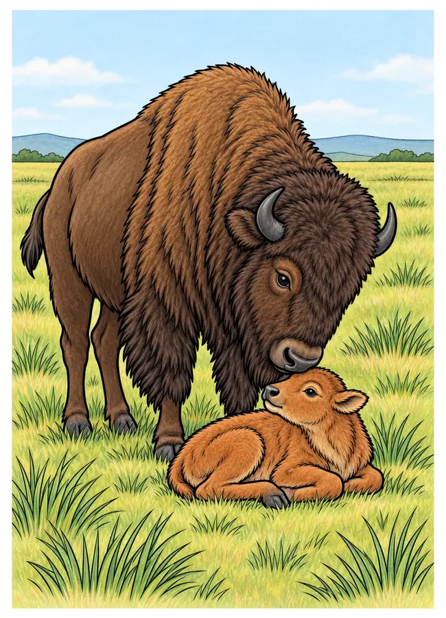
Narození na prérii
Na jaře se na prérii narodila bizoní samička Bára. Její rezavohnědá srst je mezi tmavými dospělými bizony dobře vidět.
Bizonice obvykle rodí jedno mládě. První týdny zůstává tele blízko matky a postupně poznává stádo i okolní travnatou krajinu.
Všimni si: čím se barva mláděte liší od srsti dospělých?
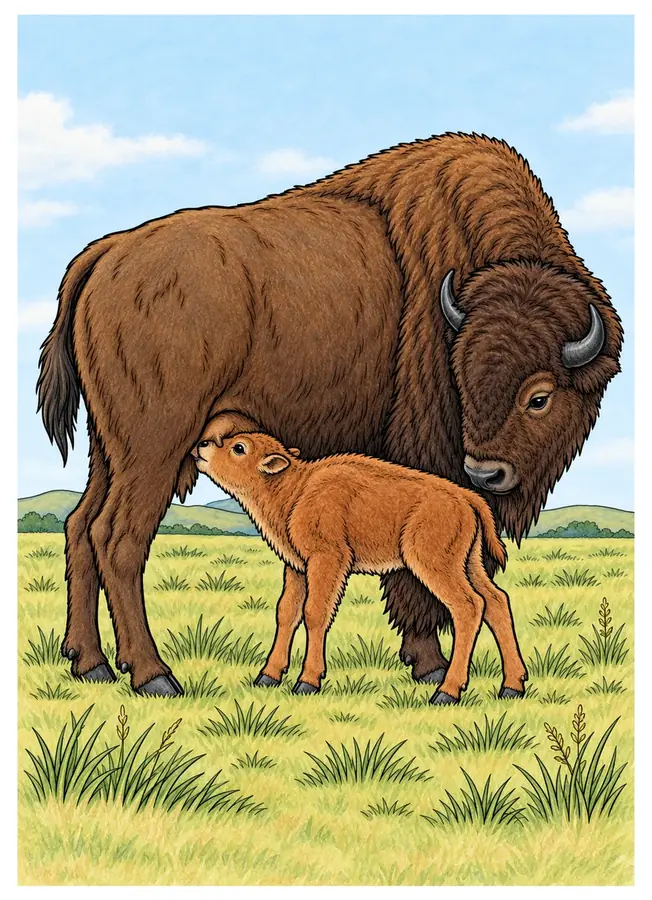
První kroky a mateřské mléko
Bára se brzy postavila a našla matčino mléko. Bizoní matka zůstává u telete a chrání ho, zatímco se učí jistě pohybovat.
Mláďata přicházejí na svět po přibližně devíti a půl měsících březosti. Tele může začít stát a sát už krátce po narození.
Všimni si: mládě se rychle učí, protože potřebuje brzy držet krok se stádem.
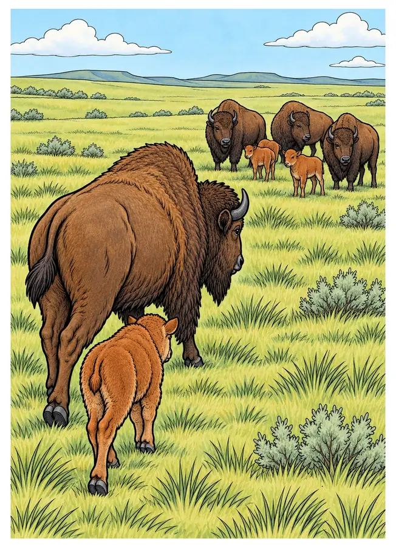
Cesta se stádem
Bára se drží své matky a společně se stádem přechází přes travnatou pláň. Ve skupině jsou další samice i mláďata.
Bizoní stáda se mění podle roční doby a podmínek v krajině. Společný pohyb pomáhá zvířatům hledat potravu a vodu.
Všimni si: Zkus najít: která zvířata jdou blízko Báry?
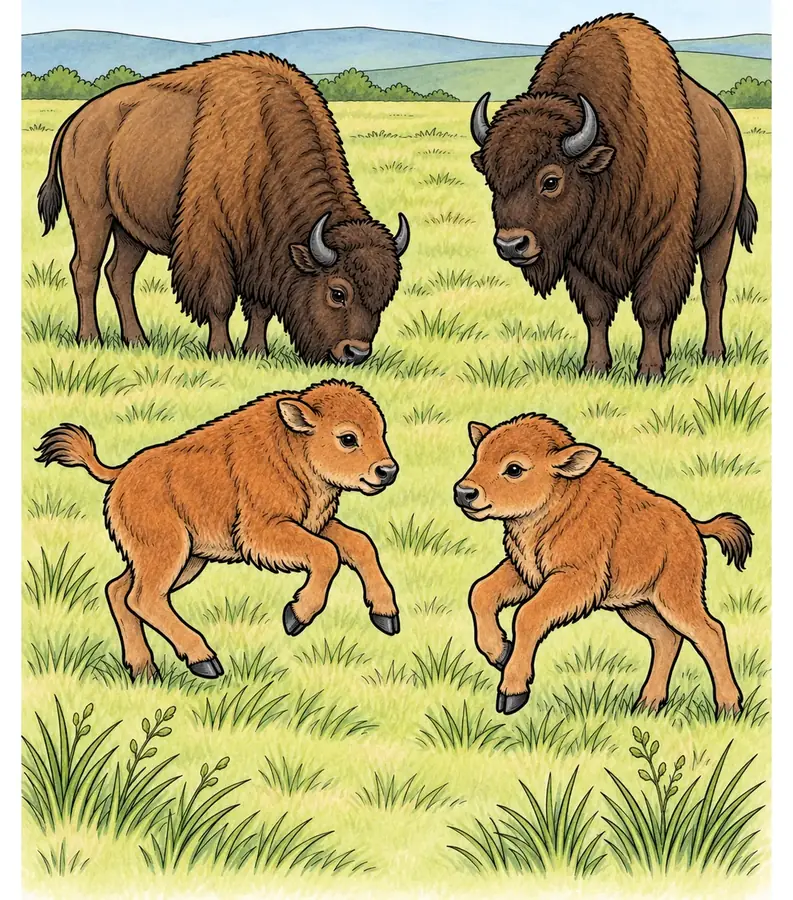
Hra pod dohledem
Bára si začala hrát s dalším teletem. Jejich matky se pasou poblíž a zároveň sledují okolí.
Hra mláďat vypadá jako běhání a dovádění, ale pomáhá jim procvičovat pohyb a vzájemné reakce. Dospělé samice přitom zůstávají nablízku.
Všimni si: kdo z dospělých bizonů má mláďata na dohled?
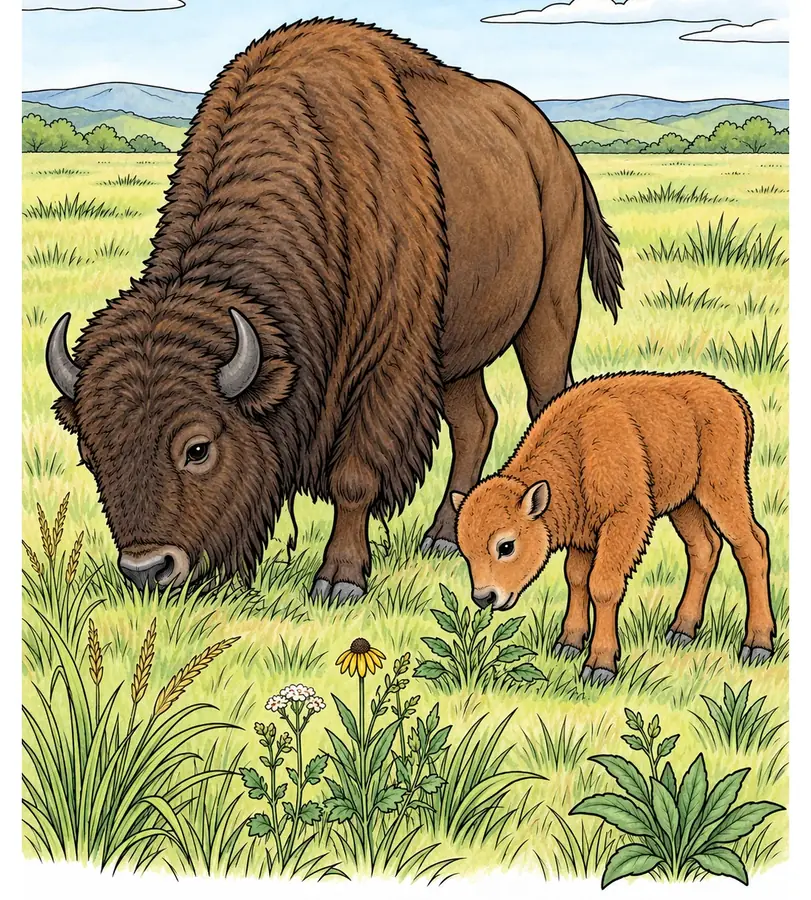
Trávy a rostliny prérie
Bára začíná okusovat mladé rostliny vedle své matky. Bizoni jsou býložravci a jejich hlavní potravou jsou trávy a ostřice.
Podle prostředí mohou spásat také další prérijní rostliny. Když se pasou a pohybují krajinou, ovlivňují podobu travnatých společenstev.
Všimni si: ostřice připomínají trávy, ale patří do jiné skupiny rostlin.
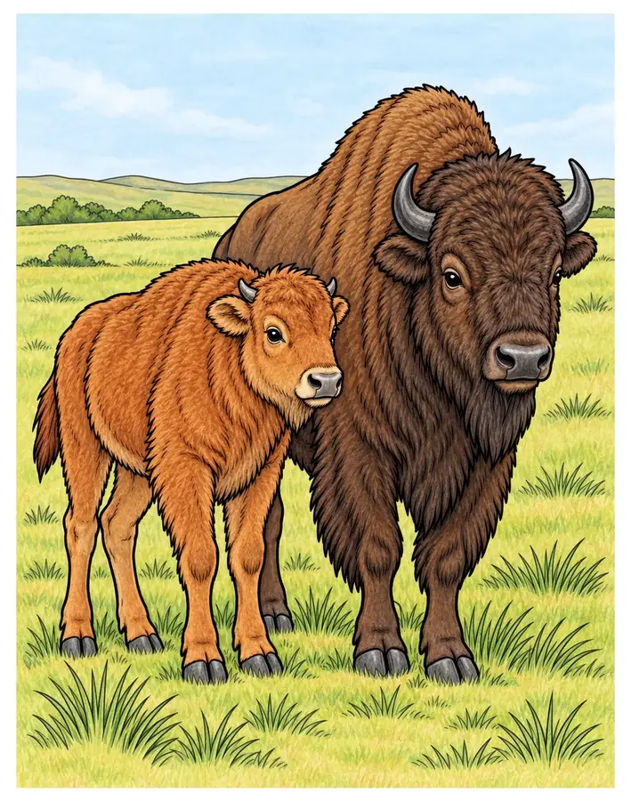
Bářina srst tmavne
Jak Bára roste, její rezavá srst postupně tmavne a více se podobá srsti dospělých bizonů.
Mláďata se rodí s nápadně světlejší, rezavou srstí. Během prvních měsíců se jejich zbarvení mění; v dospělosti je nejvýraznější hustá srst na hlavě a přední části těla.
Všimni si: které části dospělého bizona jsou nejhustěji osrstěné?
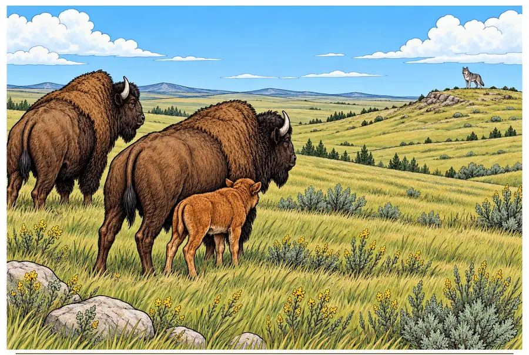
Vlci na obzoru
Jednoho dne Bára zahlédla na okraji prérie vlka. Její matka a další dospělí bizoni se semkli a postavili se k němu čelem.
Vlci mohou lovit především mláďata. Dospělí bizoni jsou velcí a silní; ve skupině se mohou bránit a chránit telata.
Všimni si: i na ilustraci můžeš sledovat, jak dospělí drží mláďata uprostřed stáda.
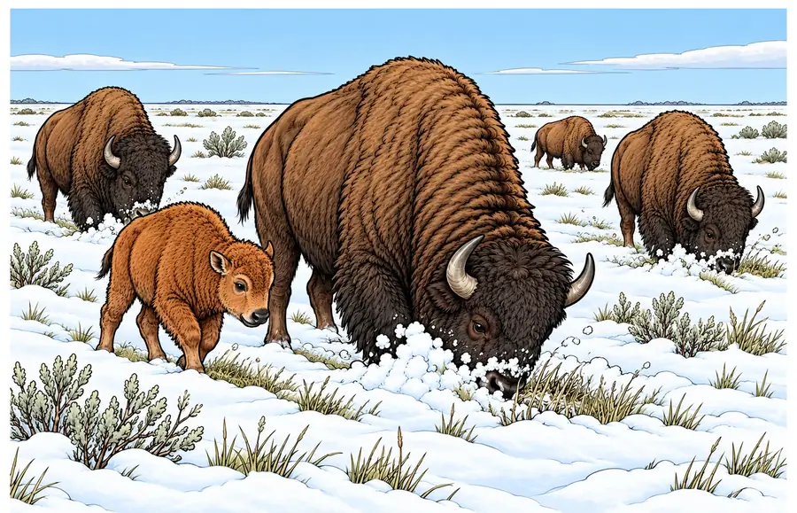
Zimní prérie
Přišla zima a Bára putovala se stádem přes zasněženou krajinu. Dospělí bizoni odhrnují sníh hlavou, aby se dostali k rostlinám.
Hustá zimní srst pomáhá bizonům zvládat chlad. Stáda se přesouvají podle dostupnosti potravy, vody a podmínek v krajině.
Všimni si: které stopy ve sněhu ukazují, kudy stádo prošlo?
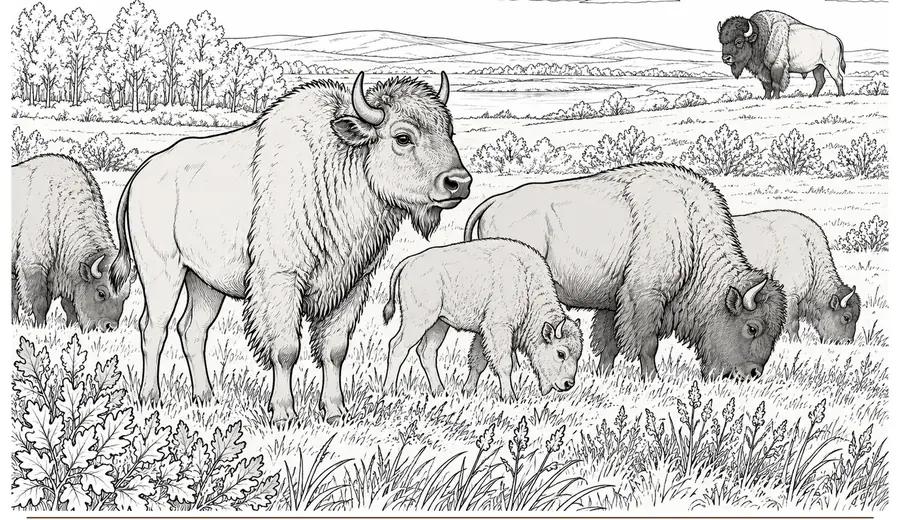
Bára dospívá
Po několika letech je z Báry dospělá bizonice. Zůstává součástí stáda a dál se pohybuje po prérii.
Samice mohou začít mít mláďata v prvních letech života. Obvykle se rodí jedno tele; březost trvá zhruba devět a půl měsíce.
Všimni si: co se změnilo od chvíle, kdy byla Bára malým rezavým teletem?
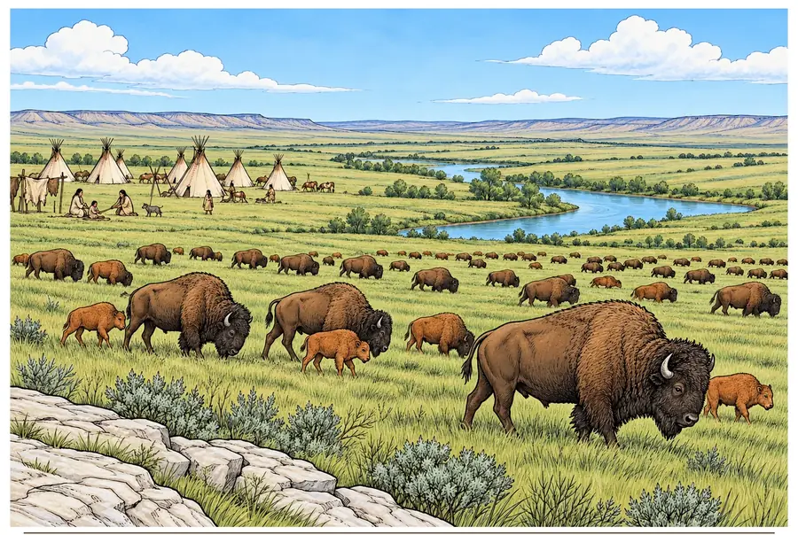
Lidé a bizoni v minulosti
Příběh se na chvíli ohlíží do minulosti. Mnohé původní národy Velkých plání mají k bizonům dlouhé a významné vztahy.
Bizoni poskytovali potravu i materiály a mají kulturní význam pro řadu původních národů. Tradice se mezi jednotlivými národy liší, proto je důležité o nich mluvit konkrétně a s respektem.
Všimni si: dnešní obnova bizonů často probíhá také ve spolupráci s původními národy.
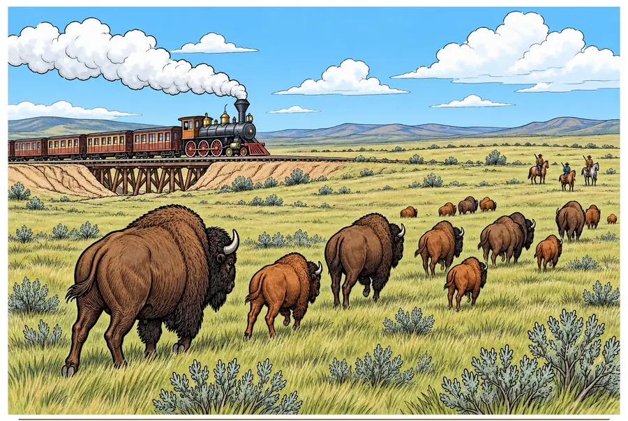
Železnice a úbytek stád
V 19. století železnice usnadnily lovcům cestu na pláně i odvoz kůží a masa. Rozsáhlý komerční lov a tehdejší vládní politika přivedly bizony téměř k vyhubení.
Rychlý úbytek bizonů měl vážné následky také pro původní národy, jejichž život a kulturu stáda po generace provázela. Ochrana proto zahrnuje i poznání této historie.
Všimni si: proč může změna krajiny a způsobu jejího využívání ovlivnit celé stádo?
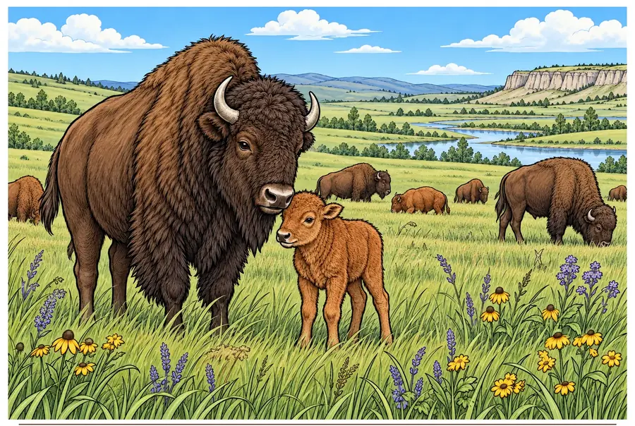
Nová generace na prérii
Dnes Bára žije na chráněné prérii se svým teletem. Národní parky, ochranáři a původní národy spolupracují na návratu bizonů do krajiny.
Ochrana pomáhá, když zůstává dostatek prostoru pro pohyb stád a péči o travnaté ekosystémy. Bizoni jsou zároveň důležitou součástí přírodního i kulturního dědictví Severní Ameriky.
Všimni si: ochrana bizonů prospívá také prériím, v nichž žije mnoho dalších druhů.
Omalovánky
Vyberte úroveň a přepínejte mezi černobílou omalovánkou a barevným vzorem.
Pět úrovní nabízí různou náročnost kresby. Omalovánku otevřete přímo z velkého obrázku nahoře; další hotové typy aktivit zatím nejsou připojené.
Zdroje a ověření
Národní den bizonů je připomínkový den ve Spojených státech a připadá na první sobotu v listopadu. V roce 2026 je to 7. listopadu.
- National Park Service – About Bison (Přehled druhu, názvů a historie)
- National Park Service – Bison facts (Stáda, rozmnožování, mláďata a potrava)
- National Park Service – People and Bison (Národní den bizonů a péče o stáda)
- National Park Service – Yellowstone Bison Ecology (Ekologie prérie, zimní pohyb a predátoři)
- U.S. Senate Resolution 945 (2026) (Oficiální připomenutí Národního dne bizonů 2026)